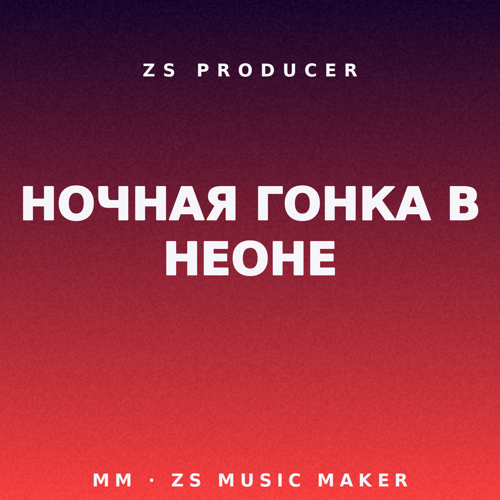

ZS MUSIC MAKER — HIT FACTORY
demo trap “ночная гонка в неоне” — 30с — hit_score 69.34 solid • seed 2024 • BPM 150 • 2026-11-14

trap 150 BPMhook_repeat 100chorus 83.7stereo 0.72low_end 11.2tiktok 65
▶ Полный мастер (30с, streaming -18.8 dBFS, 11МБ)
▶ TikTok 15с вирусный кусок (hook 3-28с)